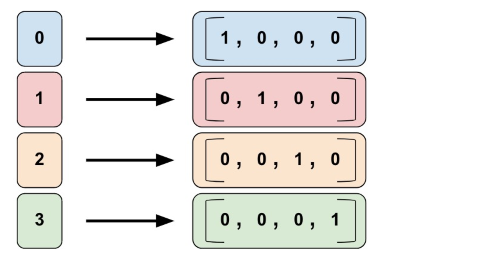

7.2 案例：DNN进行分类
学习目标
- 目标
- 知道tf.data.Dataset的API使用
- 知道tf.feature_columnAPI使用
- 知道tf.estimatorAPI使用
- 应用
- 无
7.2.1 数据集介绍
对鸢尾花进行分类：概览
本文档中的示例程序构建并测试了一个模型，此模型根据鸢尾花的花萼和花瓣大小将其分为三种不同的品种。

从左到右：山鸢尾（提供者：Radomil，依据 CC BY-SA 3.0 使用）、变色鸢尾（提供者：Dlanglois，依据 CC BY-SA 3.0 使用）和维吉尼亚鸢尾（提供者：Frank Mayfield，依据 CC BY-SA 2.0 使用）。
数据集
鸢尾花数据集包含四个特征和一个目标值。这四个特征确定了单株鸢尾花的下列植物学特征：
- 花萼长度
- 花萼宽度
- 花瓣长度
- 花瓣宽度
该标签确定了鸢尾花品种，品种必须是下列任意一种：
- 山鸢尾 (0)
- 变色鸢尾 (1)
- 维吉尼亚鸢尾 (2)
我们的模型会将该标签表示为 int32 分类数据。
下表显示了数据集中的三个样本：
| 花萼长度 | 花萼宽度 | 花瓣长度 | 花瓣宽度 | 品种（标签） |
|---|---|---|---|---|
| 5.1 | 3.3 | 1.7 | 0.5 | 0（山鸢尾） |
| 5.0 | 2.3 | 3.3 | 1.0 | 1（变色鸢尾） |
| 6.4 | 2.8 | 5.6 | 2.2 | 2（维吉尼亚鸢尾） |
7.2.2 构建模型
该程序会训练一个具有以下拓扑结构的深度神经网络分类器模型：
- 2 个隐藏层。
- 每个隐藏层包含 10 个节点。
下图展示了特征、隐藏层和预测（并未显示隐藏层中的所有节点）：

Estimator 是从 tf.estimator.Estimator衍生而来的任何类。要根据预创建的 Estimator 编写 TensorFlow 程序，您必须执行下列任务：
- 1、 创建一个或多个输入函数。
- 2、定义模型的特征列。
- 3、实例化 Estimator，指定特征列和各种超参数。
- 5、在 Estimator 对象上调用一个或多个方法，传递适当的输入函数作为数据的来源。
7.2.3 数据获取与输入函数
在iris_data文件中通过
# 获取数据
def load_data(y_name='Species'):
"""获取训练测试数据"""
train_path, test_path = maybe_download()
train = pd.read_csv(train_path, names=CSV_COLUMN_NAMES, header=0)
train_x, train_y = train, train.pop(y_name)
test = pd.read_csv(test_path, names=CSV_COLUMN_NAMES, header=0)
test_x, test_y = test, test.pop(y_name)
return (train_x, train_y), (test_x, test_y)
(train_x, train_y), (test_x, test_y) = iris_data.load_data()
输入函数是返回 tf.data.Dataset 对象的函数，此对象会输出下列含有两个元素的元组：
features：Python 字典，其中：- 每个键都是特征的名称。
- 每个值都是包含此特征所有值的数组。
label- 包含每个样本的标签值的数组。
def input_evaluation_set():
features = {'SepalLength': np.array([6.4, 5.0]),
'SepalWidth': np.array([2.8, 2.3]),
'PetalLength': np.array([5.6, 3.3]),
'PetalWidth': np.array([2.2, 1.0])}
labels = np.array([2, 1])
return features, labels
输入函数可以以您需要的任何方式生成 features 字典和 label 列表。不过，我们建议使用 TensorFlow 的 Dataset API，它可以解析各种数据。概括来讲，Dataset API 包含下列类：

Dataset- 包含创建和转换数据集的方法的基类。您还可以通过该类从内存中的数据或 Python 生成器初始化数据集。TextLineDataset- 从文本文件中读取行。TFRecordDataset- 从 TFRecord 文件中读取记录。FixedLengthRecordDataset- 从二进制文件中读取具有固定大小的记录。Iterator- 提供一次访问一个数据集元素的方法。
def train_input_fn(features, labels, batch_size):
"""
"""
dataset = tf.data.Dataset.from_tensor_slices((dict(features), labels))
dataset = dataset.shuffle(1000).repeat().batch(batch_size)
return dataset
def eval_input_fn(features, labels, batch_size):
"""
"""
features = dict(features)
if labels is None:
inputs = features
else:
inputs = (features, labels)
dataset = tf.data.Dataset.from_tensor_slices(inputs)
dataset = dataset.batch(batch_size)
return dataset
dataset.make_one_shot_iterator().get_next()
7.2.3 特征处理tf.feature_colum
特征处理tf.feature_column
Estimator 的 feature_columns 参数来指定模型的输入。特征列在输入数据（由input_fn返回）与模型之间架起了桥梁。要创建特征列，请调用 tf.feature_column 模块的函数。本文档介绍了该模块中的 9 个函数。如下图所示，除了 bucketized_column 外的函数要么返回一个 Categorical Column 对象，要么返回一个 Dense Column 对象。

要创建特征列，请调用 tf.feature_column 模块的函数。本文档介绍了该模块中的 9 个函数。如下图所示，除了 bucketized_column 外的函数要么返回一个 Categorical Column 对象，要么返回一个 Dense Column 对象。

- Numeric column（数值列）
Iris 分类器对所有输入特徵调用 tf.feature_column.numeric_column 函数：SepalLength、SepalWidth、PetalLength、PetalWidth
tf.feature_column 有许多可选参数。如果不指定可选参数，将默认指定该特征列的数值类型为 tf.float32。
numeric_feature_column = tf.feature_column.numeric_column(key="SepalLength")
- Bucketized column（分桶列）
通常，我们不直接将一个数值直接传给模型，而是根据数值范围将其值分为不同的 categories。上述功能可以通过 tf.feature_column.bucketized_column 实现。以表示房屋建造年份的原始数据为例。我们并非以标量数值列表示年份，而是将年份分成下列四个分桶：
# 首先，将原始输入转换为一个numeric column
numeric_feature_column = tf.feature_column.numeric_column("Year")
# 然后，按照边界[1960,1980,2000]将numeric column进行bucket
bucketized_feature_column = tf.feature_column.bucketized_column(
source_column = numeric_feature_column,
boundaries = [1960, 1980, 2000])
- Categorical identity column（类别标识列）
输入的列数据就是为固定的离散值，假设您想要表示整数范围 [0, 4)。在这种情况下，分类标识映射如下所示：

identity_feature_column = tf.feature_column.categorical_column_with_identity(
key='my_feature_b',
num_buckets=4) # Values [0, 4)
- Categorical vocabulary column（类别词汇表）
我们不能直接向模型中输入字符串。我们必须首先将字符串映射为数值或类别值。Categorical vocabulary column 可以将字符串表示为one_hot格式的向量。

vocabulary_feature_column =
tf.feature_column.categorical_column_with_vocabulary_list(
key=feature_name_from_input_fn,
vocabulary_list=["kitchenware", "electronics", "sports"])
- Hashed Column（哈希列）
处理的示例都包含很少的类别。但当类别的数量特别大时，我们不可能为每个词汇或整数设置单独的类别，因为这将会消耗非常大的内存。对于此类情况，我们可以反问自己：“我愿意为我的输入设置多少类别？
hashed_feature_column =
tf.feature_column.categorical_column_with_hash_bucket(
key = "some_feature",
hash_bucket_size = 100) # The number of categories

- 其它列处理
- Crossed column（组合列）
7.2.4 实例化 Estimator
鸢尾花分类本身问题不复杂，一般算法也能够解决。这里我么你选用DNN做测试tf.estimator.DNNClassifier 我们将如下所示地实例化此 Estimator：
我们已经有一个 Estimator 对象，现在可以调用方法来执行下列操作：
- 训练模型。
- 评估经过训练的模型。
- 使用经过训练的模型进行预测。
训练模型
通过调用 Estimator 的 train 方法训练模型，如下所示：
# Train the Model.
classifier.train(
input_fn=lambda:iris_data.train_input_fn(train_x, train_y, args.batch_size),
steps=args.train_steps)
我们将 input_fn 调用封装在 lambda 中以获取参数，同时提供一个不采用任何参数的输入函数，正如 Estimator 预计的那样。steps 参数告知方法在训练多步后停止训练。
评估经过训练的模型
模型已经过训练，现在我们可以获取一些关于其效果的统计信息。以下代码块会评估经过训练的模型对测试数据进行预测的准确率：
# Evaluate the model.
eval_result = classifier.evaluate(
input_fn=lambda:iris_data.eval_input_fn(test_x, test_y, args.batch_size))
print('\nTest set accuracy: {accuracy:0.3f}\n'.format(**eval_result))
与我们对 train 方法的调用不同，我们没有传递 steps 参数来进行评估。我们的 eval_input_fn 只生成一个周期的数据。
运行此代码会生成以下输出（或类似输出）：
Test set accuracy: 0.967